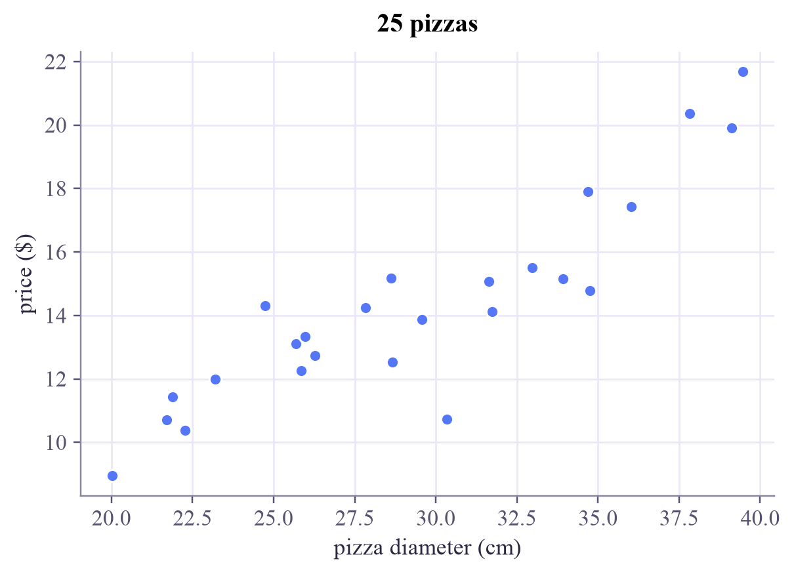
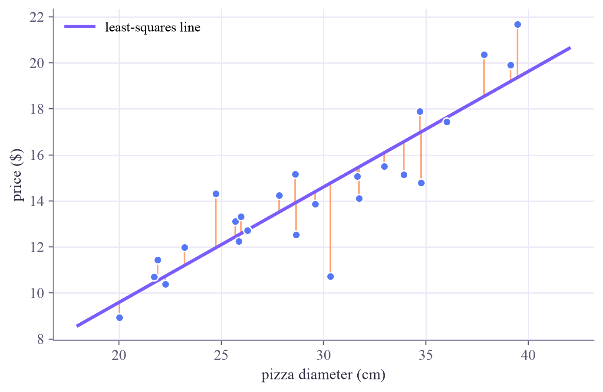
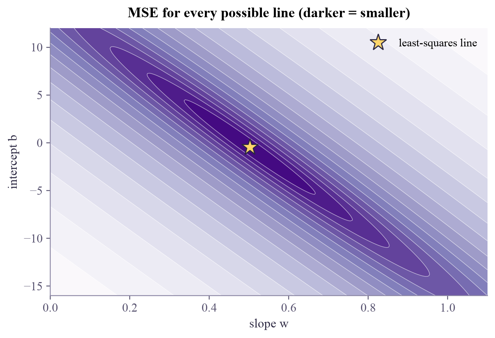

Machine Learning
 about 11 min
about 11 min ml-w2d1.ipynb
ml-w2d1.ipynb
The best-fit line and its loss bowl
Draw the best straight line through the data, learn what 'best' means, and see every possible line at once as a landscape with a bowl.
In this lesson you will
- Describe a line model and its two knobs
- Compute residuals and the mean squared error (MSE)
- See the MSE as a bowl over all , whose bottom is the best line
Warm-up
1 minHow much for a 32 cm pizza?
Your favorite pizza place prices pizzas by size, but the menu lost its 32 cm line. You know what 25 other pizzas cost. Can you predict a fair price? This is regression: supervised learning where the answer is a number. Your CS class has just covered it, so today is a visual replay with a new twist: the loss bowl, the picture behind all of this week.
Big idea
3 minA line, its errors, and the score
The simplest model is a straight line with two knobs, the slope and the intercept :
For each data point , the residual is how far the line misses it: . To score the whole line we square each residual and average:
Why squares? They are always positive (misses above and below can't cancel), they punish big misses much more than small ones, and they make the maths smooth, which matters tomorrow. The line with the smallest MSE is the least-squares line. For a straight line there is even an exact formula:
With more features the idea is the same: .
Now a change of viewpoint. Every pair of knobs is one line, and every line has an MSE. So the MSE is a function of the knobs, and we can draw it as a landscape over the plane:
For linear regression the landscape is a smooth bowl. Every point on it is a line; the bottom of the bowl is the least-squares line.
A bowl has exactly one lowest point and no false dips, which is why least squares always finds the best line. Most machine-learning landscapes aren't this friendly, but the picture of "a model is a point on a loss landscape" stays with you for the rest of the tutorial.
Play
4 minFit it by hand
Drag the two white handles to move the line. Each residual is drawn as a little square: the MSE is literally the average area of the squares. On the right, the pink dot shows where your line sits in the loss bowl; you can also drag the dot itself. Get to the bottom, then press Snap to best fit.
Try this
Notice the bowl is a long, thin valley: moving along it trades slope against intercept and the MSE barely changes. Then switch on the outlier and drag it far above the others: the whole bowl moves, and so does its bottom. One bad point can tilt the line, because its square is huge.
Code
3 minFitting in Python
The notebook for this lessonEvery code cell below, with what it printed, is in
ml-w2d1.ipynb. To change the code and run it yourself, open the notebook in Google Colab (free, in your browser) or download it for your own Jupyter.import numpy as np
import matplotlib.pyplot as plt
rng = np.random.default_rng(3)
diameter = rng.uniform(20, 40, size=25) # cm
price = 0.55 * diameter - 2 + rng.normal(0, 1.4, size=25) # dollars, with some noise
plt.scatter(diameter, price)
plt.xlabel("pizza diameter (cm)")
plt.ylabel("price ($)")
plt.title("25 pizzas")
plt.show()What it printed in the notebook
def predict(x, w, b):
return w * x + b
def mse(x, y, w, b):
residuals = y - predict(x, w, b)
return np.mean(residuals ** 2)
for w, b in [(0.3, 5.0), (0.6, -3.0), (0.5, -0.5)]:
print(f"w = {w:4.2f}, b = {b:5.2f} -> MSE = {mse(diameter, price, w, b):6.2f}")What it printed in the notebook
w = 0.30, b = 5.00 -> MSE = 3.46 w = 0.60, b = -3.00 -> MSE = 2.36 w = 0.50, b = -0.50 -> MSE = 1.97
w_best, b_best = np.polyfit(diameter, price, deg=1)
print(f"best line: price = {w_best:.3f} * diameter {b_best:+.3f}")
print(f"its MSE : {mse(diameter, price, w_best, b_best):.3f}")What it printed in the notebook
best line: price = 0.502 * diameter -0.446 its MSE : 1.955
xs = np.linspace(18, 42, 100)
fig, ax = plt.subplots(layout="constrained")
for x, y in zip(diameter, price):
ax.plot([x, x], [y, predict(x, w_best, b_best)], color="#ff8a50", lw=1.2, alpha=0.8) # residuals
ax.scatter(diameter, price, zorder=3)
ax.plot(xs, predict(xs, w_best, b_best), color="#7b5cfa", lw=2.5, label="least-squares line")
ax.set_xlabel("pizza diameter (cm)")
ax.set_ylabel("price ($)")
ax.legend()
plt.show()What it printed in the notebook

from sklearn.linear_model import LinearRegression
model = LinearRegression().fit(diameter.reshape(-1, 1), price)
print("slope w :", model.coef_[0].round(3))
print("intercept b:", model.intercept_.round(3))
print("a 32 cm pizza should cost about $", model.predict([[32]])[0].round(2))What it printed in the notebook
slope w : 0.502 intercept b: -0.446 a 32 cm pizza should cost about $ 15.61
And the bowl itself, computed for 62,000 lines at once with NumPy broadcasting:
ws = np.linspace(0.0, 1.1, 221)
bs = np.linspace(-16, 12, 281)
W, B = np.meshgrid(ws, bs) # every (w, b) pair on a grid
# broadcasting: predictions for every grid point and every pizza at once
pred = W[..., None] * diameter + B[..., None] # shape (281, 221, 25)
loss = np.mean((price - pred) ** 2, axis=-1) # one MSE per grid point
fig, ax = plt.subplots(figsize=(6.2, 4.2), layout="constrained")
levels = np.geomspace(loss.min(), loss.max(), 18)
cs = ax.contourf(W, B, loss, levels=levels, cmap="Purples_r", norm="log")
ax.contour(W, B, loss, levels=levels, colors="white", linewidths=0.5, alpha=0.6)
ax.plot(w_best, b_best, "*", ms=16, color="#ffd66b", mec="#2c2842", label="least-squares line")
ax.set_xlabel("slope w")
ax.set_ylabel("intercept b")
ax.set_title("MSE for every possible line (darker = smaller)")
ax.legend(loc="upper right")
plt.show()What it printed in the notebook

Your turn
2 minYour turn: find the bottom by brute force
The array loss holds the MSE of every line on the grid. Find the grid point with the smallest loss and compare it with np.polyfit's exact answer.
i = 0 # TODO: the flat index of the smallest loss: loss.argmin()
row, col = np.unravel_index(i, loss.shape)
print(f"grid best: w = {W[row, col]:.3f}, b = {B[row, col]:.2f}, MSE = {loss[row, col]:.3f}")
print(f"polyfit: w = {w_best:.3f}, b = {b_best:.2f}, MSE = {mse(diameter, price, w_best, b_best):.3f}")Need a hint?
loss.argmin() gives the position of the smallest value in the flattened array; np.unravel_index turns it back into a (row, column) pair.
Show a solution
i = loss.argmin()
row, col = np.unravel_index(i, loss.shape)
print(f"grid best: w = {W[row, col]:.3f}, b = {B[row, col]:.2f}, MSE = {loss[row, col]:.3f}")
print(f"polyfit: w = {w_best:.3f}, b = {b_best:.2f}, MSE = {mse(diameter, price, w_best, b_best):.3f}")
print("Brute force needs 62,000 tries for two knobs. With a million knobs a grid is hopeless:")
print("that's why tomorrow's lesson walks downhill instead.")What it printed in the notebook
grid best: w = 0.500, b = -0.40, MSE = 1.955 polyfit: w = 0.502, b = -0.45, MSE = 1.955 Brute force needs 62,000 tries for two knobs. With a million knobs a grid is hopeless: that's why tomorrow's lesson walks downhill instead.
Check yourself
2 minQuick check
Question 1 of 3
A point is at and the line predicts there. What does it add to the sum of squared residuals?
Question 2 of 3
Prices are in dollars. What is the unit of the MSE?
Question 3 of 3
Why does a single far-away outlier move the least-squares line so much?
Wrap-up
1 minToday in one sentence
Quantum link
"Pick the knobs that minimize a loss" is the recipe for almost all of machine learning, quantum included. A quantum model's knobs are gate angles, and its loss is built from measured expectation values. Its landscape is not a simple bowl, and there's no exact formula, so we need tomorrow's tool: gradient descent.
Go deeper (optional)
ISLP section 3.1 (simple linear regression). Its Figure 3.2 draws exactly this bowl, as contours and in 3D, for a dataset about TV advertising and sales.
Next in Machine Learning: gradient descent, or how to roll down a bowl when you can't see it.

That's the lesson!
Tap the button to save it. Short and steady wins.
Next in Machine LearningGradient descent
Marked by mistake? Undo